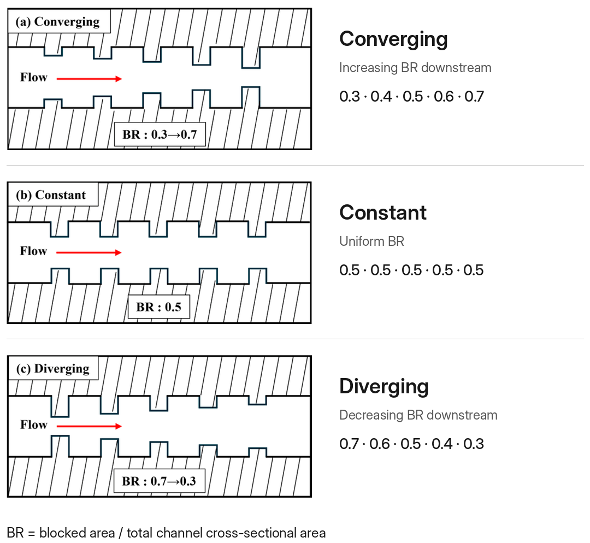
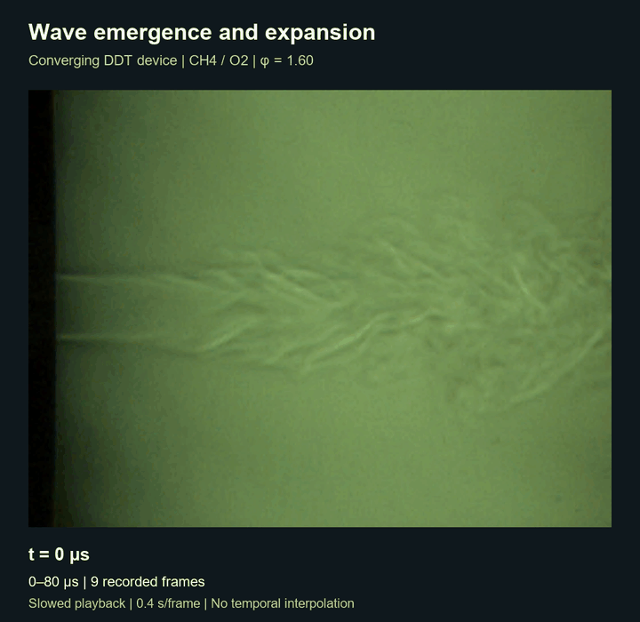

Impact of a Variable Blockage Ratio on the Detonation Transition in a Pre-Detonator
This study experimentally investigated whether the spatial distribution of obstacle blockage ratio affects flame acceleration and deflagration-to-detonation transition (DDT) in a rotating detonation engine (RDE) pre-detonator when the mean blockage ratio is held constant at 0.5. Converging (0.3→0.7), uniform (0.5), and diverging (0.7→0.3) obstacle configurations were tested across CH4/O2 equivalence ratios from 0.64 to 1.6.
High-speed chemiluminescence, schlieren imaging, and dynamic pressure measurements showed that the converging layout initiated detonation earliest and most often, with the largest difference at an equivalence ratio of 1.6. The results show that the streamwise distribution of the blockage ratio, rather than its mean value, governs DDT onset. Subsequent work extended this rig across fuels (C2H2, CH4), oxidizers (O2, N2O), and channel heights (3–15 mm).


Source: Gil et al., Fire 8(7), 263 (2025), CC BY 4.0